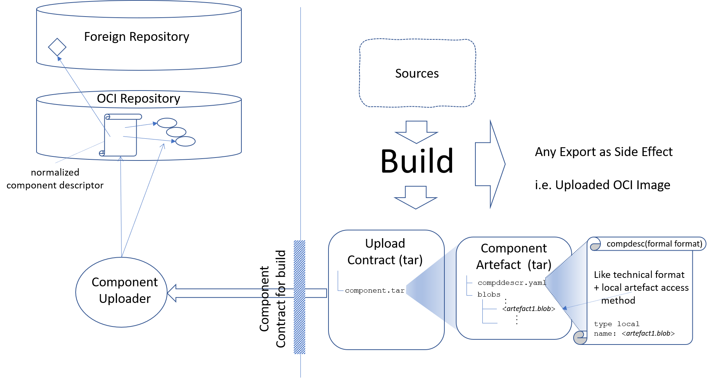

Component Content in an OCI Registry¶
Component descriptors and local content delivered with a component are stored in an OCI registry as OCI artefact. The component descriptor may describe references to to other artefacts in any repository what type is supported by an access type, regardless of the type of the artefact. There are dedicated access types to refer to artefacts stored in an OCI registry.
Storing Components¶
The content of a component is stored in the OCI registry as OCI artefact of the
media type application/vnd.gardener.cloud.cnudie.component.config.v1+json.
Hereby the content consists at least of the component descriptor itself, which
is basically stored as blob described as first layer in the oci manifest. The
media type is used as type for the config blob described in the oci manifest.
The blob confains a config json describing the digest of the component
descriptor blob (first layer).
The component descriptor blob uses the media type
application/vnd.gardener.cloud.cnudie.component-descriptor.v2+json.
Together with the component descriptor a set of artefacts local to the
component may be delivered. Those component local artefact blobs are stored as
additional layers of the appropriate media type. To describe the access to such
artefacts local to the component the component descriptor supports a dedicated
access type LocalBlob with the blob digest as reference name.
Creating Components during the Build¶
Typically versions for components are provided by builds. To support this scenario thers is a contract between a build and a component uploader tool.
The task of the build is then just to provide such a contract file
containing the generated component descriptor version with approriate
artefact and component referencen together with referenced blob artefacts.
To describe references to those local artefact blobs the
well-known access type LocalBlob is used.
A build may provide information for multiple components. For every provided component version a component archive with the component descriptor and the contained local blobs has to be provided. Those archives are then bundeled in another fingle archive. THis archive is then the contract to the upload tool. It is possible to call this tool directly in the build or the build system defined a way to pass this archive to the build ecosystem which then carries the repository credentials and handles the upload.
The same contract can be used for transporting repository content via storage media between two environments. Therefore the transport tool just need to provide a file based frontend and backend additional to the regular repository to repository endpoints. This leads to the specification of a general CNUDIE Transport Format (CTF).
The same contract and tooling can then be used for the build uploads and regular transports.
CNUDIE Transport Format¶
The transport format is based on tar archives (.tar or .tgz). There is one archive per OCI artefact that should be included in the transport.
There will be two similar file system structures, one to describe component artefact and one for describing regular standard OCI artefacts.
The final transport file is then just an archive (tar, tgz) containing the artefact archives.
Component Archive¶
So far there is only a specification for the format for a component artefact.
├── component-descriptor.yaml
└── blobs
├── blob1
├── ...
└── blobn
All the contained blobs (may use any name here) have to be referenced by the local access type in the component descriptor.
The component descriptor must be the first entry in the tar archive to support streaming.
OCI Artefact¶
A similar format for standard OCI Artefacts (including OCI Images as special case) could look like this
├── artefact-descriptor.yaml
├── oci-manifest.json
└── blobs
├── blob1
├── ...
└── blobn
Like the component descriptor the additional file artefact-descriptor.yaml
described the artefact name and version. The other files are just taken
from the OCI artefact api. The blob names should be the correct OCI
digests used in the oci-manifest.json.
The artefact descriptor must be the first entry in the tar archive to support streaming, followed by the oci manifest.